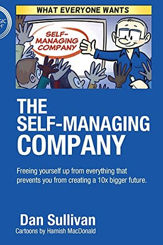

Library › Productivity
Who Not How — Summary & Key Lessons

The formula to achieve bigger goals through accelerating teamwork — stop asking HOW, start asking WHO.
📖 OPEN THE FULL INTERACTIVE BREAKDOWN →🌐 Read it in Hindi, Hinglish, Gujarati, Tamil & 22 more languages — free, with audio.
💡 The Big Idea
The moment you set a goal, your brain asks 'HOW do I do this?' — and that single question is the bottleneck of your life: it assumes YOU must acquire every skill, grind every task, and be the hero of every subplot. Sullivan's reframe: ask 'WHO can help me achieve this?' instead. Every result you want already has people who love doing the parts you dread, do them better than you ever will, and are findable today. The mindset shift unlocks the four freedoms — TIME (whos give you your hours back), MONEY (whos raise your ceiling because your best work compounds), RELATIONSHIP (whos become your network and your board), PURPOSE (freed founders pursue 10x visions instead of 2x grinds). The mechanics: define the vision with crystal clarity (the Impact Filter: what's the purpose, what does success look like, what does failure look like), then hand the WHOLE result — not tasks — to the who, and get out of their way. The tax on hoarding hows is invisible but massive: decision fatigue, shrunken ambitions, and the peculiar loneliness of the person who must do everything themselves.
🧠 The 4 Key Lessons
Lesson 1: The How Trap: Your Default Question Is a Cage
Part 1: The Who Not How Mindset
'How?' feels responsible — it's actually a cage with three walls. Wall one: SKILL ACQUISITION COST — every how demands you learn something someone else has already mastered; the years you'd spend becoming a mediocre accountant/designer/marketer are years stolen from becoming a world-class YOU. Wall two: AMBITION SHRINKAGE — brains reject goals they can't see the how for, so how-thinkers unconsciously set only goals within their current skills; your dreams are being pre-filtered by your limitations. Wall three: DECISION FATIGUE — carrying every how means every day is a hundred micro-decisions in domains you're bad at, which is why successful how-hoarders feel busier as they succeed. Sullivan's reframe of procrastination is the tell: chronic procrastination on a goal usually isn't laziness — it's your mind correctly recognizing that YOU shouldn't be the one doing it. The dream is valid; the assigned laborer (you) is wrong.
📖 Example: Hardy's opening story: Richie Norton, whose bigger-vision projects stalled for YEARS behind 'first I need to learn' — until he flipped one: instead of learning audiobook production (months of hows), he asked 'who produces audiobooks?' and had a finished… Read the full example →
⚡ Do this: Write your most procrastinated goal at the top of a page. Below it, list every 'how' step you've been avoiding. Now re-label the list: next to each how, write the TYPE of who who'd enjoy it (bookkeeper, editor, developer, cousin who loves spreadsheets). That relabeled list is a hiring/asking plan, not a to-do list.
Lesson 2: The Impact Filter: Clarity Is What Whos Run On
Part 1: How to Find Whos
Whos don't fail because delegation doesn't work; they fail because the delegator handed over fog. Sullivan's tool is the IMPACT FILTER — one page, filled before recruiting any who: PURPOSE (what do I want to accomplish and WHY does it matter), IMPORTANCE (what's the biggest difference this makes), IDEAL OUTCOME (what does DONE look like, specifically), BEST RESULT if we succeed / WORST RESULT if we fail (stakes make it real), and SUCCESS CRITERIA (the measurable finish lines). Hand this page to a capable who and something magic happens: they own the RESULT, not a task list — which means their creativity, methods, and standards activate instead of your micromanagement. The filter also self-screens: the who who reads it and lights up is your who; the one who wants daily instructions isn't. Vision transference, not supervision, is the entire job of the person with the goal.
📖 Example: The book's recurring case — Hardy himself as Sullivan's who: Sullivan (70s, zero interest in book-writing hows) had 30 years of IP; Hardy had the craft and hunger. Sullivan handed vision-level clarity (this concept, this audience, this standard) and ZERO… Read the full example →
⚡ Do this: Before your next ask/hire, complete a one-page Impact Filter: purpose, importance, ideal outcome, best/worst result, success criteria. Give the who the page and the RESULT — then schedule check-ins on outcomes only, never methods.
Lesson 3: Buy Back Freedom: Time and Money Follow the Whos
Parts 2-3: Freedom of Time and Money
The four freedoms arrive in order. TIME first: every who you install returns hours — but the discipline is spending those hours UP (vision, strategy, craft, rest) not sideways (more hows you should also hand off); Sullivan's rule of thumb — if someone can do it 80% as well, it's theirs, because your marginal 20% costs your irreplaceable 100% elsewhere. MONEY second, through a mindset flip: a who is never a COST, always an INVESTMENT — the ₹50k/month operations who who frees 60 founder-hours monthly is the cheapest leverage on earth if those hours go to what only you do; do the math per hire (hours returned × your effective rate vs salary) and 'I can't afford help' usually inverts into 'I can't afford to keep doing this myself.' The compounding effect: each freedom feeds the next — freed time builds rarer skills, rarer skills raise your rate, higher rates fund better whos, better whos free more time. The founders stuck at the same revenue for five years are almost always self-funding that plateau with hoarded hows.
📖 Example: Sullivan's coaching data-point that anchors the book: entrepreneurs in his program who fully adopt who-thinking report both higher income AND fewer working hours within two years — the pairing conventional wisdom says is impossible. The micro-example… Read the full example →
⚡ Do this: Run the arithmetic on your most hated recurring task: hours/month × your effective hourly rate = what doing it yourself costs. Find the market price of a who for it. If the gap is 3x or more (it will be), make the hire/ask within two weeks.
Lesson 4: Be a Good Who: Gratitude, Generosity, and the Network Effect
Part 4: Freedom of Relationship and Purpose
Who-thinking isn't extraction — it runs on RECIPROCITY. First: you are someone else's who — being a great one (delivering wholes, not excuses) is how you earn access to great ones. Second: always ask 'what can I GIVE this who?' — the best collaborators are magnetized by generosity and repelled by transactional vibes; Sullivan's 'always be the buyer' means invest in relationships before you need them, and never treat A-players like vendors. Third: GRATITUDE isn't politeness, it's infrastructure — publicly credited whos do their best work and recruit their peers to you; hoarding credit is how founders end up surrounded by B-players (the As left for someone who saw them). The final freedom, PURPOSE, emerges from all this: surrounded by whos handling the hows, your ambition unclamps — goals stop being sized to your skills and start being sized to your NETWORK's skills, which is the actual mechanism behind every '10x vision' that isn't just a poster. Self-made is a myth told by people with forgotten whos.
📖 Example: The book's celebrity exhibit: Michael Jordan — the most 'self-made' icon imaginable — reads, in who-terms, as a network: Phil Jackson (the coaching who), Scottie Pippen (the on-court who), Tim Grover (the fitness who), David Falk (the deals who who invented… Read the full example →
⚡ Do this: This week: (1) send one specific, public thank-you crediting a who who helped you; (2) for your most important professional relationship, do one generous act with no ask attached; (3) write one goal sized to your NETWORK's capabilities instead of your own — notice how different it looks.
✅ 5-Step Action Plan
- Catch every 'how do I...?' and convert it to 'who can...?' — out loud, daily.
- Write an Impact Filter before every delegation; hand over results, not task lists.
- Apply the 80% rule: if a who can do it 80% as well, it was never yours.
- Run the cost-of-self math on hated tasks; hire when the gap hits 3x (it will).
- Credit whos publicly and give before asking — your network is your new skillset.
💬 Best Quotes from Who Not How
- “Whos create abundance. Hows create tunnel vision.”
- “If you're the hero of every story in your business, you're the bottleneck of every story in your business.”
- “Procrastination is wisdom: it's your soul telling you the goal needs a who, not a harder try.”
Interactive version: mark lessons as read, listen in your language, share quote cards.